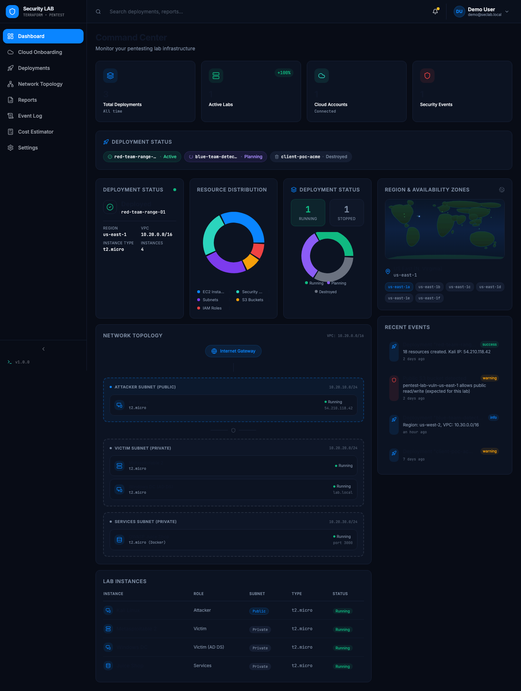
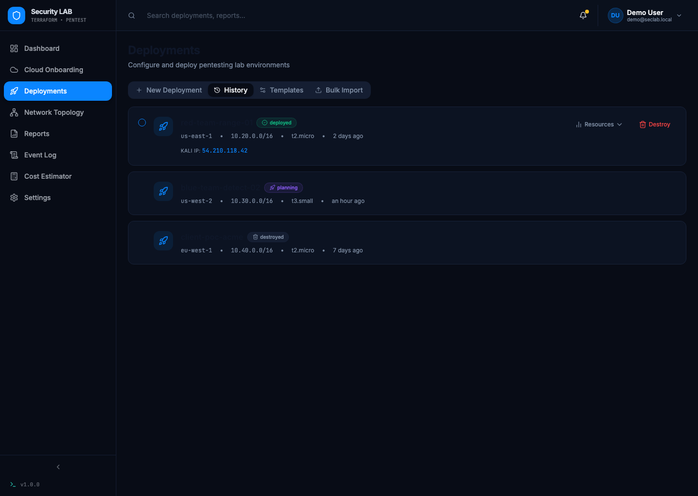
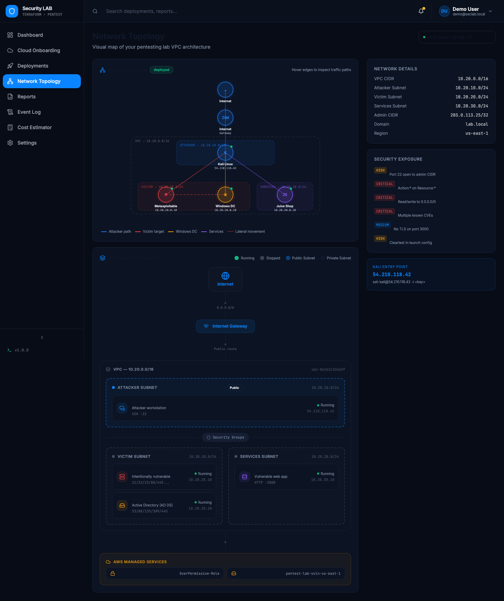
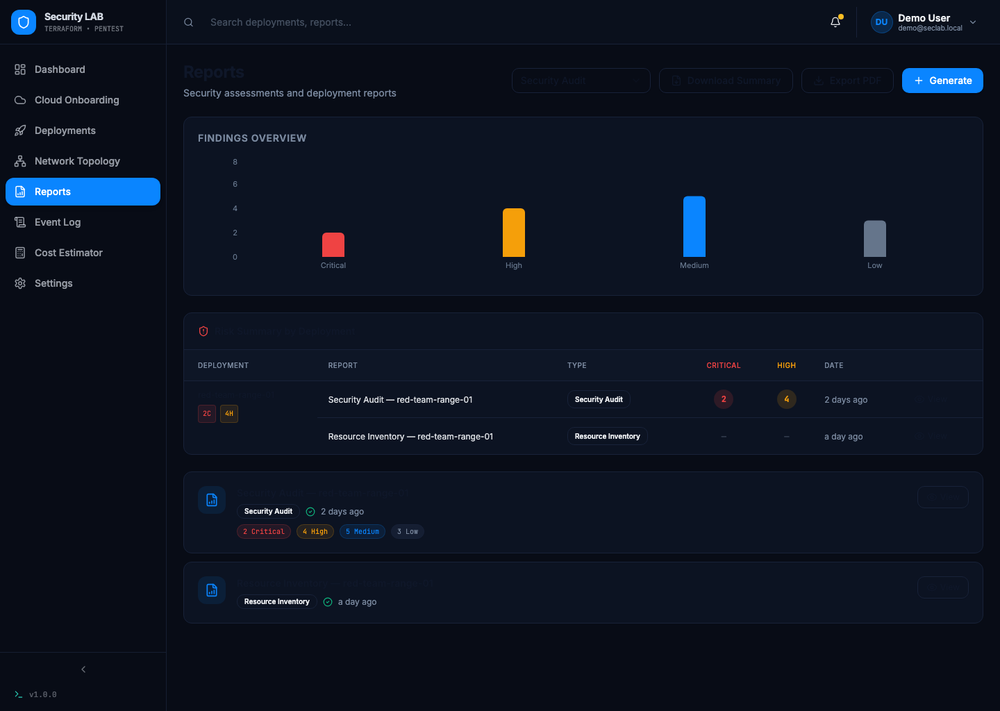
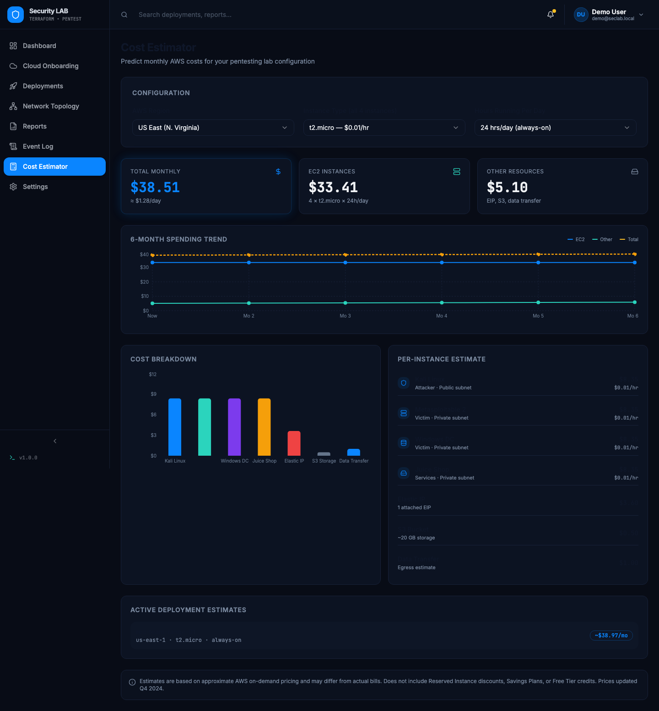
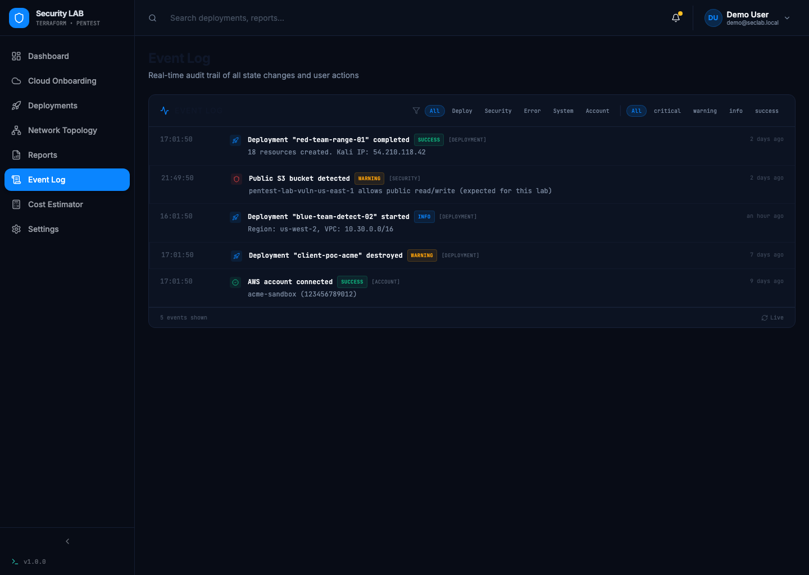

One dashboard, full visibility
See every active environment, its health, and recent activity the moment you log in — no digging through cloud consoles or spreadsheets.
- Deployment status and resource distribution at a glance
- Region & availability zone map
- Live network topology preview
- Recent events feed

Spin up a lab in minutes
Configure a new environment with a guided form, preview exactly what will be built, then deploy or tear it down with one click.
- Reusable templates for common lab configurations
- Full deployment history with live status
- One-click destroy when an engagement wraps up

See the lab as your team will attack it
A live, visual map of every subnet, security group, and host — attacker, victim, and services tiers laid out exactly as they're connected.
- Public vs. private subnet boundaries at a glance
- Per-instance status and connectivity
- Security exposure summary alongside the diagram

Hand clients a report, not a screen share
Generate security audit, compliance, and resource inventory reports from any deployment, with findings broken down by severity and ready to export.
- Findings summarized by critical / high / medium / low
- One-click PDF export
- Tied to the exact deployment it was generated from

Know the bill before you deploy
Predict monthly AWS spend for any lab configuration, with a per-instance breakdown and a spending trend you can hand straight to finance.
- Live estimate as you change instance type or schedule
- Cost breakdown by resource
- Estimates tracked against currently active deployments

A full audit trail, and the controls to match
Every deploy, destroy, and security-relevant change is logged and filterable. Authentication, directory integration, and alerting are configured from one settings panel.
- Filter events by type and severity
- SAML/MFA, AD/Entra ID, and SMTP alerting built in
- Local user management for smaller teams
